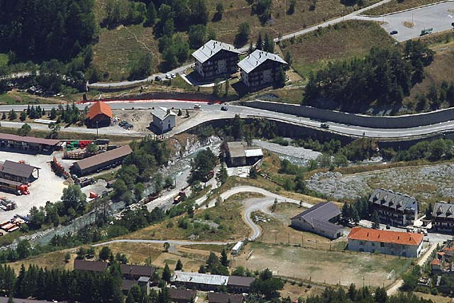
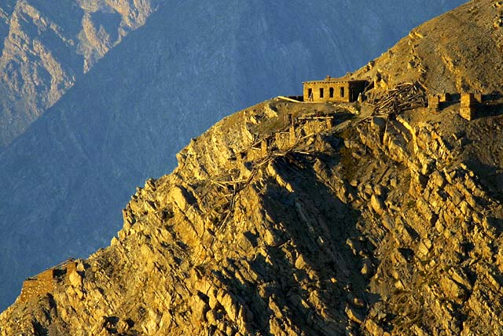
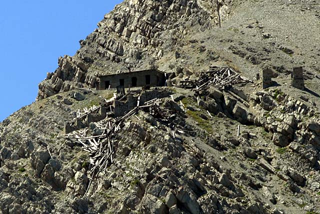
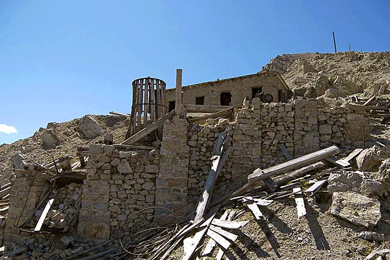
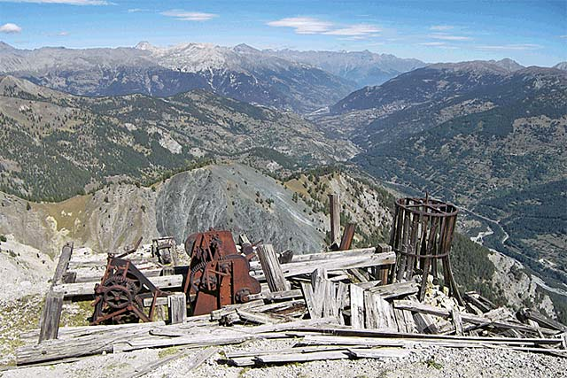
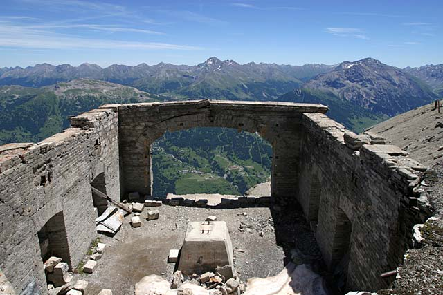
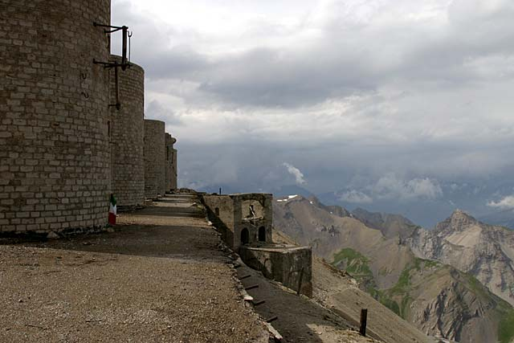
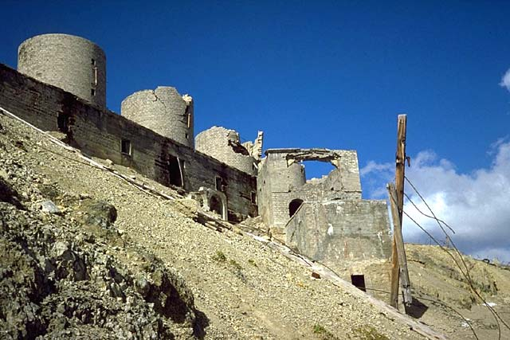

The Chaberton Battery
Cable car

[home]
THE CABLE CAR

At the center of the photo you can see the starting station at the bottom with attached power plant.

Ruins of what was the intermediate station of the cable car, in the locality Pian delle Marmotte.

Ruins of what was the intermediate station of the cable car, the support poles were all made of wood.

Ruins of what was the intermediate station of the cable car, stone support walls. (photo R. Guasco)

Ruins of what was the intermediate station of the cable car, winches for manual maneuvers. (photo R. Guasco)

Arrival station at the Battery, positioned below the sixth tower.

Arrival station at Chaberton Peak Battery, below the sixth tower.

Arrival station at the Battery, under the sixth tower.
Unauthorized use of images is prohibited.
Photos are copyright © Roberto Chirio: all rights reserved.